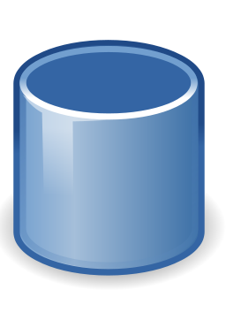
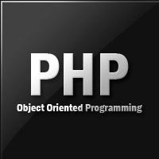
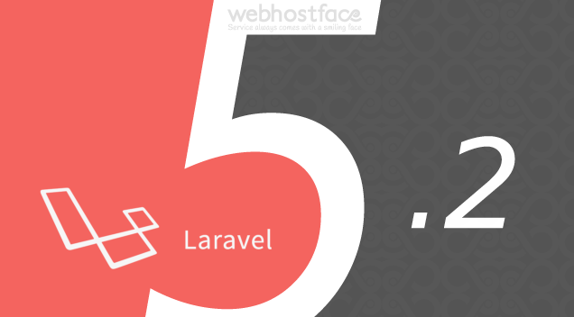
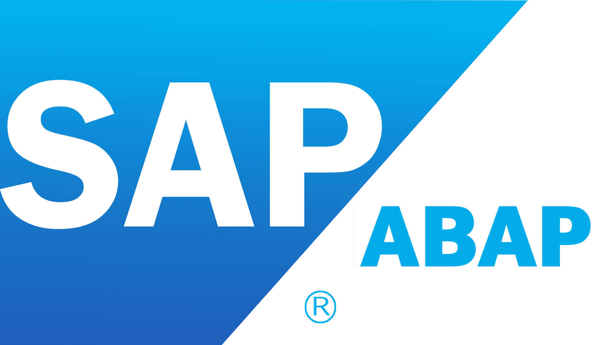
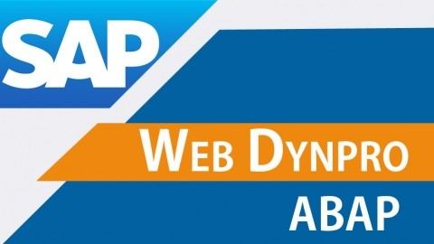
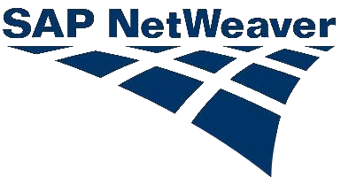
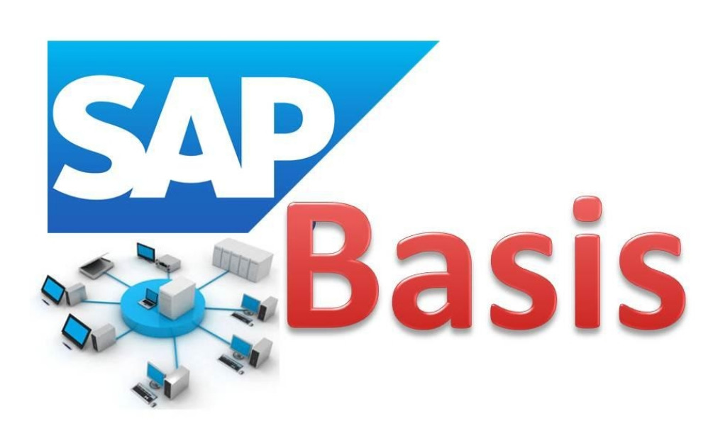

Elementos que te permitirán dibujar tus propias páginas.
Introducción a CSS
Dándole elegancia, movilidad y estilos a las páginas terminadas.
JQuery y Javascript
Ahora las páginas tendrán inteligencia programada por vos.
Integración Web
Con las herramientas básicas, empezamos a comunicarnos (AJAX).

Introducción a Base de Datos
Donde los datos empiezan a perdurar creando sistemas.
El poder de PHP
Aprende a desarrollar potentes aplicaciones web en PHP7, el lenguaje más usado.

PHP con Objetos
El poderoso lenguaje PHP pero ahora orientado a objetos potencian aún más este popular lenguaje.

Laravel 5.2 para PHP
Aprende Laravel 5.2 el Framework mas usado en PHP para aplicar todo tu potencial.

SAP ABAP
El Lenguaje de Programación SAP para aprender a desarrollar en el ERP más popular del mundo.

SAP WEBDYNPRO ABAP
Utiliza el Potencial de ABAP pero para desarrollar aplicaciones Web.

SAP NetWeaver Portal
Utiliza el Portal de SAP y todo el Potencial de Netweaver para desarrollar.

SAP BASIS
Aprende a Administrar toda la infraestructura SAP, a realizar nuevas instalaciones y mantenimientos.
Introducción a HTML
Con este curso, podrás dibujar una página con diversos componentes. Puede que no quede muy linda, pero será una página al fin. Es un curso básico que no requiere conocimientos previos y con el cuál aprenderás a comunicarte con el código y ver que la programación no es magia.
Duración estimada: 2 hs
Conocimientos previos: Ninguno
Anotá el código del curso! ID001
Introducción a CSS
Los estilos diferencias a una página ya que le dan identidad, movimiento y la dinámica de adaptarse a los diferentes tamaños de pantalla. En este curso podrás aprender cómo armar una página con estilos que marquen la diferencia
Duración estimada: 2 hs
Conocimientos previos: Ninguno
Anotá el código del curso! ID002
Jquery y JavaScript
Luego de haber construido la pantalla, tenemos que empezar a darle la lógica y dinámica para que interactue con el usuario. Ahí es cuando introducimos las herramientas de js para empezar a programar validando, interactuando y transformando lo creado
Duración estimada: 2 hs
Conocimientos previos: Ninguno (recomendable saber algo de HTML)
Anotá el código del curso! ID003
Integración Web
Si ya sabés HTML, CSS y JS ahora nos queda poder reunir estos elementos y sumarle comunicación. En este curso haremos páginas más complejas incluso leyendo datos (no desde una base pero si desde un txt) para mostrarlos en la página a travéz de AJAX y con formato Json
Duración estimada: 2 hs
Conocimientos previos: HTML y JavaScript
Anotá el código del curso! ID004
Introducción a Base de Datos
En este curso veremos Base de Datos Relacional, como construir tablas, armar un modelo sustentable y realizar los script de consulta, actualización, modificación y borrado de datos.
.
Duración estimada: 2 hs
Conocimientos previos: Ninguno
Anotá el código del curso! ID005
El Poder de PHP
PHP es uno delos lenguajes más usados en programación web, no sólo por su poder a la hora de desarrollar aplicaciones de lo más complejas, sino porque también son herramientas gratuitas y con hosting también gratuitos. Sin lugar a dudas, cuando se necesita hacer un proyecto complejo y sin pagar licencias PHP la tecnología a utilizar
Aprende PHP para trabajar con el paradigma Orientado a Objetos. Todo el potencial de PHP ahora bajo el Paradigma de Objetos logra que los sistemas programados en este lenguaje sean suér dinámicos, sustentables y mantenibles. Hoy en día, los modelos en objeto son mucho más populares y preferidos por los programadores que otros paradigmas.
Aprende Laravel 5.2 el Framework mas usado en PHP para aplicar todo el potencial del lenguaje con esta herramienta. Si ya conocés PHP y lo trabajaste con Objetos, entonces, para completar el set de herramientas, sólo te falta usar este IDE que hará que tus proyectos puedan ser encarados como un verdadero sistema con toda la profesionalidad y exigencia que los mercados requieren
SAP utiliza como único lenguaje de programción dentro de su ERP, ABAP. Es un lenguaje que convina el poder de las consultas SQL sin tener que salir del entorno y que además lo potencia con sentencia propias del lenguaje. Además, aprender ABAP no es sólo aprender un lenguaje de Programación, sino todo lo que un ERP conlleva: Transacciones, Tablas, Estructuras, Funciones, Reportes, Formularios, etc. Para ingresar al mundo SAP es fundamental saber ABAP.
Duración estimada: 40 hs
Conocimientos previos: Ninguno
Anotá el código del curso! ID009
SAP WenDunpro ABAP
El mundo SAP amplia sus horizontes incorporando herramientas que permitan programar bajo un entorno Web. Con Webdynpro ABAP, basado en el modelo MVC, podrás crear aplicaciones SAP pero para ser publicadas de forma web. conociendo el Potencial de ABAP, ingresar al mundo WebDynpro ABAP te proporcionará las herramientas para despegar de la tecnología SAP de escritorio y poder diseñar interfaces web.
Duración estimada: 40 hs
Conocimientos previos: ABAP
Anotá el código del curso! ID010
SAP NetWeaver Portal
para seguir ampliando el mundo SAP y poder ofrecer portales web, SAP incorpora el Producto SAP NetWeaver con módulos tan útiles y potentes como SAP Portal. A través de esta aplicación podrás configurar un ambiente web 100% integrado con el CORE de SAP para poder publicar desarrollos y armar otras herramientas inmersan en el framework de SAP
Duración estimada: 40 hs
Conocimientos previos: Ninguno
Anotá el código del curso! ID011
SAP BASIS
Si la programción no es lo tuyo y lo que te gusta son los "fierros" del sistema, aprender SAP BASIS te acercará al mundo de los servidores, las instalaciones, la implementación y actualización de paquetes y todo un mundo ligado a la parte dura de Sistemas, dónde el equipo trabaja en pos de mantener los ambientes optimos y operativos 7x24